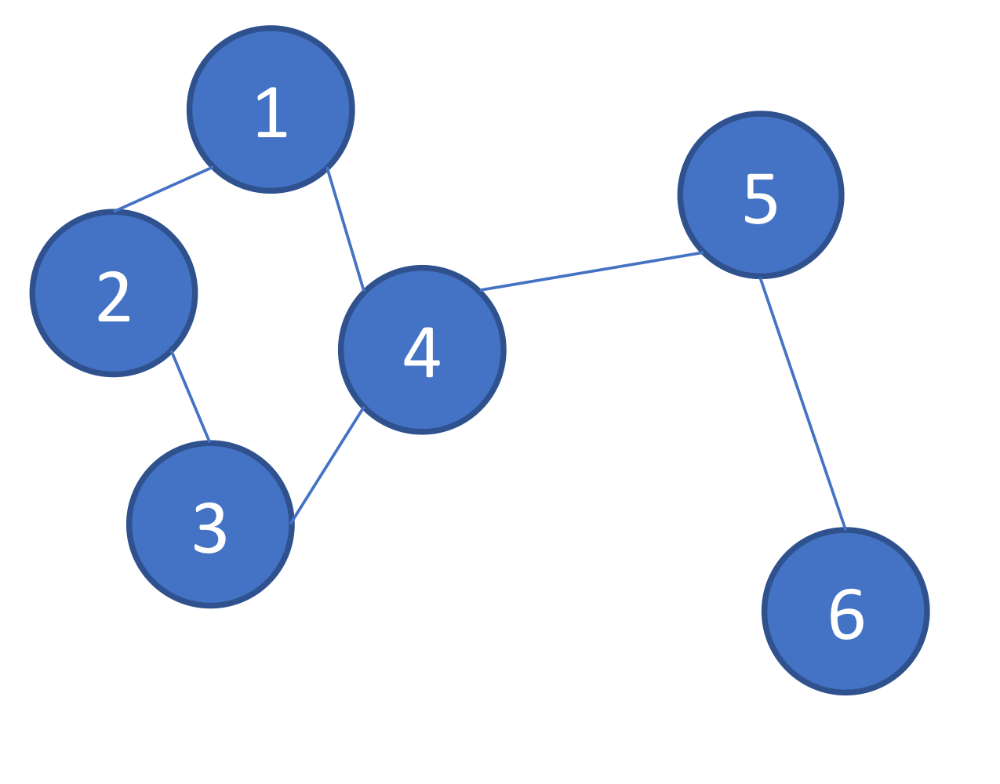

Graph neural network - GCN, DGCNN
Graph neural networks are usually used in social network, citation network, molecules and 3D mesh, because in these fields, data are represented in the form of graphs. For example, the interactions between users and products in e-commence, the molecules in chemistry, are modeled as graphs(Wu et al.). A graph consists of vertices and edges, the edge describes the relativity of the two vertices it connects. As graph can be irregular, it may have a variable size of unordered vertices, and vertices from a graph may have a different number of neighbors, this feature makes it suitable for LiDAR point clouds due to their irregular, unstructed and orderless.
In this article, I introduce two GCN models, the General GCN and the Dynamic Graph CNN(DGCNN).
GCN
In GCN, the propagation steps include aggregation and update. Take a designated vertex as an example, in the aggregation step, the information of itself and all of its neighbors are collected in a feature map(shaped in ), n is the number of neighbors, is the dimension of input feature vector for each point. In the update step, a multi-layer perception(MLP) model works on the feature map obtained in the aggregation step. The MLP consists of a linear(fully connected) layer( ), followed by an activation layer(e.g, Relu). After the MLP, output the final feature map shaped in .
In GCN, graph structure is represented by a matrix, like the kernel in CNN, the matrix carries the weights between any two vertices. However, this matrix can not be trained, it is uniquely determined by the graph. Take the graph below as a example, I will introduce various matrices to optimize the GCN model.
Similarity matrix
In GCN, graph structure is represented by similarity matrix(also named adjacency matrix, connectivity matrix). The graph below can be demonstrated by matrix(1).
In aggregation step, the weighted sum of neighbors
Laplacian matrix
DGCNN
Reference:
Wu, Z., Pan, S., Chen, F., Long, G., Zhang, C., & Philip, S. Y. (2020). A comprehensive survey on graph neural networks. IEEE Transactions on Neural Networks and Learning Systems.